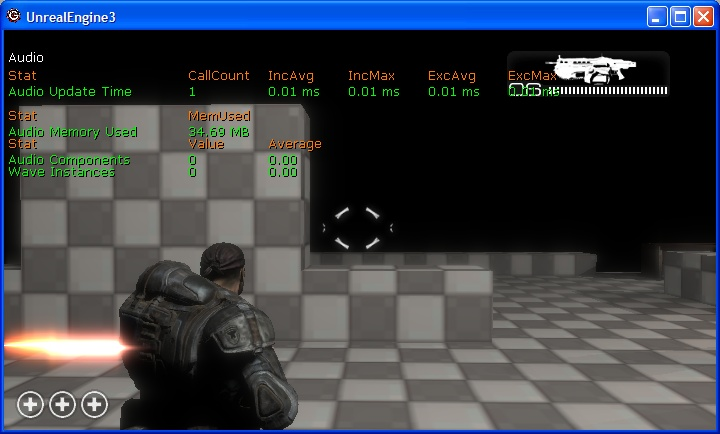
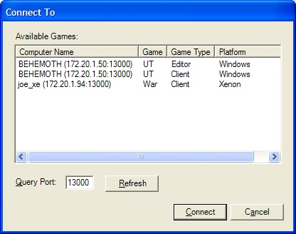
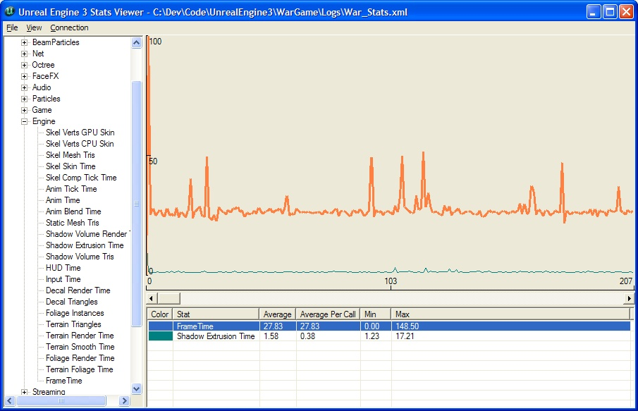
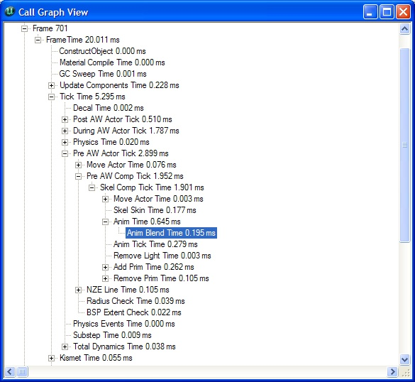

UDN
Search public documentation:
PerfStatsCH
English Translation
日本語訳
한국어
Interested in the Unreal Engine?
Visit the Unreal Technology site.
Looking for jobs and company info?
Check out the Epic games site.
Questions about support via UDN?
Contact the UDN Staff
日本語訳
한국어
Interested in the Unreal Engine?
Visit the Unreal Technology site.
Looking for jobs and company info?
Check out the Epic games site.
Questions about support via UDN?
Contact the UDN Staff
虚幻引擎性能跟踪系统
概述
游戏中的统计数据

第二种查看统计数据的方法是层次化地查看。这将会把统计数据当成树层次结构对待，这里子项统计数据会包含在父项的总时间内。比如，所有包含的数据都作为统计数据FrameTime(帧时间)的一部分。当您知道某个区域的性能不好并且需要知道是哪个特定区域有问题时，使用这种方式查看统计数据是非常有用的。您可以不断地跟踪信息直到您找到消耗最多时间的叶子节点为止。默认，统计数据包括了非独占时间信息。您可以通过使用控制台命令"stat exclusive"显示独占时间。这显示了不包括其任何子项统计数据在内所消耗的时间。当跟踪查找场景中的哪个部分导致性能问题时这是非常有用的工具。
竖栏的意思
| 竖栏 | 意思 |
| # | 当处于层次结构模式时用于导航统计数据层次结构。 |
| CallCount(调用次数) | 指出了在那帧中那个统计数据更新的次数。 |
| IncAvg(平均包含时间) | 这是在上几帧中统计数据所消耗的平均非独占时间。 |
| IncMax | 这是在上几帧中统计数据中所消耗的最大时间。 |
| ExcAvg | 这是在上几帧中统计数据在不包括其子项统计数据情况下所消耗的平均时间。 |
| ExcMax | 这是在上几帧中统计数据在不包括其子项统计数据情况下所消耗的最大时间。 |
控制台命令
控制台命令是您在游戏中和统计数据系统交互的方式。统计数据系统支持一组简单的命令，用于在hud上显示游戏中的统计数据的信息。统计数据系统中的所有控制台命令都是以“stat”标示符开始，比如"stat engine"，这将会切换引擎统计数据组的渲染。以下表格显示了引擎所支持的控制台命令及其它们的作用。| 命令 | 结果 |
| inclusive | 切换非独占状态。如果为true，则显示非独占时间。 |
| exclusive | 切换独占状态。如果为true，则显示独占时间。 |
| cycles | 切换循环计数器状态。如果为true，那么显示循环计数器统计数据。 |
| counters | 切换计数器状态。如果为true，那么显示计数器统计数据。 |
| grouped | 改变分组查看模式的渲染模式。如果已经处于分组模式则禁用渲染。 |
| hier | 改变层次结构查看模式(调用层次图形模式)的渲染模式。如果已经处于层次结构模式则禁用渲染。 |
| nav "StatNum" | 沿着调用图形层次结构 向上/向下 移动当前选中的统计数据。 |
| color "Item" "Color" | 改变指项相渲染时使用的颜色。 |
| list groups | 把所有统计数据组的名称转存到日志中。请使用showlog来查看。 |
| list group "GroupName" | 把指定组中的所有统计数据转存到日志中。请使用showlog来查看。 |
| list list sets | 列出已经保存到GEngineIni中的自定义集合。 |
| save "SetName" | 把当前统计数据保存到GEngineIni文件中名称为 "SetName" 的自定义统计数据集合中。 |
| name "StatName" | 切换单独统计数据的渲染器标志。如果为true，统计数据将随同它的组一同渲染。 |
| none | 关闭所有组的统计数据渲染。 |
| "GroupName" | 切换那各组的渲染器标志。如果为true，将渲染那个组。 如果 "GroupName(组名称)" 和自定义状态集合的名称相匹配，那么将其用那个自定义集合。 |
统计数据记录
这个版本的统计数据系统包含了一个“统计数据提供者”架构。这个架构用于从游戏中收集统计数据并把它们发送到某种形式的外部存储中。在每帧结束处，将会给注册的提供者列表一个数据的简要说明。这个数据可以写入到磁盘中、发送到网络上、集成到另一个API系统中等。Epic支持把每帧统计数据进行基于文件或网络的记录。统计数据的文件记录
这个版本的统计数据系统支持基于文件记录统计数据。系统可以写出两种格式的文件： CSV用于导入到Excel中，XML用于统计数据查看器。CSV格式对于和前面捕获的数据结果进行快速比较是非常好的。它也允许您Excel表格的所有功能。XML格式主要用于当捕获数据以便稍后查看的情况。XML文件是统计数据查看器使用的格式，所以您仅需要加载现有的XML文件到统计数据查看器中就可以查看数据了。网络化的统计数据
在最新版本的统计数据系统中还包含了一个通过网络收集统计数据的功能。这允许您为专用服务器收集统计数据，这个处理在以前是不能实现的。它通过UDP收集统计数据，它可以在我们支持的各种 OS/游戏机平台 上进行工作。在 Xbox360上，统计数据还可以通过PIX工具进行捕获。配置统计数据记录
统计数据提供者通过MyGameEngine.ini中的一个设置来启用，每个提供者有一个名称，并且使用那个名称来检查INI文件中的配置数据。比如，要想启用统计数据的XMLL文件记录，那么您的Engine.ini文件需要有如下设置：[StatNotifyProviders] XmlStatNotifyProvider=true以下是Epic提供的提供者完整列表及其默认配置：
[StatNotifyProviders] XmlStatNotifyProvider=false CsvStatNotifyProvider=false StatsNotifyProvider_UDP=true PIXNamedCounterProvider=false也可以通过命令行来启用统计数据提供者。这是通过把提供者名称作为参数来实现的： utgame.exe ons-testmap -CsvStatNotifyProvider 上面的控制台命令打开了写入到 utgame_stats.csv中的以逗号为分隔记录的统计数据。
统计数据查看器
获得数据
查看器用于查看通过文件记录保存的现有文件(前参照器那面关于文件记录的部分)。它也用于连接一个正在运行的游戏，然后通过网络收集那个游戏的统计数据信息。通过网络收集的信息也可以保存出来以便稍后查看。打开现有的统计数据文件
选择 File(文件) | Open(打开)菜单选项，并导航到您的游戏的日志目录。所有的统计数据记录功能都会把它们的文件写入到游戏的日志目录中。连接到远程游戏
通过使用 Connect(连接) | Connect To(连接到) 菜单选项可以弹出以下对话框。当第一次创建这个对话框时，它会广播一个通知信息到所有游戏。refresh（刷新）按钮可以重新广播同样的信息。这两种广播都发生在对话框中指定的端口上。如果您有多个游戏团队或者您想隔离出一组服务器，您可以改变游戏监听的端口。为了使得连接过程更加容易，对话框里列出了正在运行的游戏类型及其运行平台。在以下的图片中，我正在PC上运行编辑器的UT版本、在我的PC上运行一个Onslaught游戏，在我的XBox360上运行战争机器。要想从对话框中理出的游戏中收集统计数据，那么可以双击您想收集数据的游戏或者选中它，并选择Connect (连接)按钮。
查看数据
以下图片显示了一个打开的文件的示例，该文件是通过网络收集大量数据后保存的。在那个视图中，我已经向图表显示中添加了两个计数器：FrameTime和SkelCompose。为了帮助稍微低区分这些线，选中的统计数据将总是以粗线条描画。显示区域正在呈现150帧的数据。每个统计数据有和它相关的自己的颜色，可以通过双击在图表下面的列表中的统计数据来进行修改。图表的背景颜色也可以按照同样的方式来修改。要想从显示中删除一个统计数据，您仅需在列表中选中那个统计数据，然后点击删除键即可。
添加一个统计数据到图表中
您可以通过从是树状视图中拖拽一个单独的统计数据到图表区域或者通过拖拽一个组到图表区域来向图表中添加统计数据。当拖拽组到图表中时，它会把所有统计数据都添加到显示面板上。综合数据
统计数据的在列表视图中显示。它显示了统计数据的平均值、最小值、最大值。默认情况下，这些值是针对整个数据集合的，即包括所有帧。您可以通过选择 View(视图)| Ranged Aggregate Data(区间范围内的综合数据) 选项来仅查看特定帧集合的综合数据。当按照范围查看时，随着您滑动过集合数据会进行更新。缩放查看区域
X轴缩放比例是通过使用F1 (视图| 放大)和F2（视图|缩小）按键来完成。这将会 降低/增加 分布在显示面板上的帧的数量。Y轴缩放比例是通过基于每个统计数据来完成的。在网络收集信息过程中自动滚动
当连接到远程游戏时，图表显示将会自动滚动来显示最新的数据。您可以通过使用F3（视图|自动滚动显示）按键来进行切换。调用图表视图
您可以通过右击统计数据图表中的帧并选择“View Frame N(查看帧N)“选项来查看任何帧的调用图表。这将会弹出一个窗口，以树形结构显示了统计数据的调用图表，如下所示：
因为点击精确的帧会有点误差，所以它会把您点击位置附近的帧也添加到视图中。这也有助于向下探索统计数据来跟踪峰值，从而获得不同帧之间对比。所有的时间都是作为非独占时间报告的。